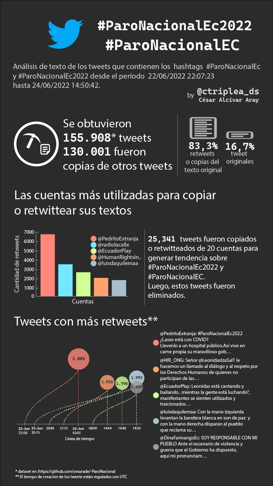

¿Por qué Pedro Granja se ha convertido en una referencia para retwittear mensajes acerca del paro nacional en Ecuador? ¿Por qué una vez retwitteados muchos mensajes acerca del paro, luego fueron borrados? ¿Son bots o cuentas falsas los que manipulan las tendencias de Twitter en EC?. Estimado lector, seguramente usted podrá plantearse muchas más preguntas o responder a las mías. ¿Quién sabe?
Lo único que me queda claro, es que las redes sociales no son un termómetro del sentir ciudadano. Les invito a revisar la infografía.

×